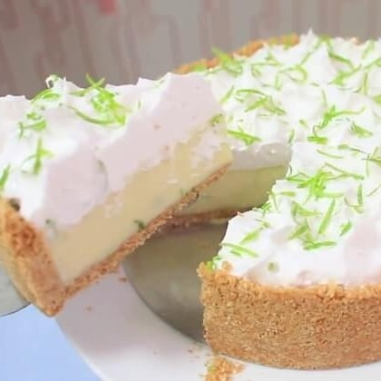

Torta de limão

Ingredientes
Massa
- 4 gemas
- 4 colheres (sopa) de açúcar
- 4 colheres (sopa) de manteiga
- 4 colheres (sopa) de leite
- 1 colher (sopa) de fermento químico
- Farinha de trigo QB
Recheio
- 2 latas de leite condensado
- 100 ml de sumo de limão
Cobertura
- 4 claras
- 8 colheres (sopa) de açúcar
Modo de preparo
Massa
- Misturar as gemas com o açúcar, a manteiga e o leite.
- Acrescentar o fermento e, aos poucos, adicionar a farinha, misturando até dar o ponto, soltando das mãos.
- Abrir a massa delicadamente em uma fôrma de fundo removível com as mãos, deixando alta nas laterais.
- Assar a 180º C até começar a dourar a massa.
Recheio
- Bater o leite condensado com o suco de limão e reservar.
Cobertura
- Bater as claras em neve com o açúcar, formando um merengue de pico firme. Reservar.
Montagem
- Despejar o recheio sobre a massa assada.
- Cobrir com o merengue.
- Dourar com um maçarico ou levar ao forno para dourar.